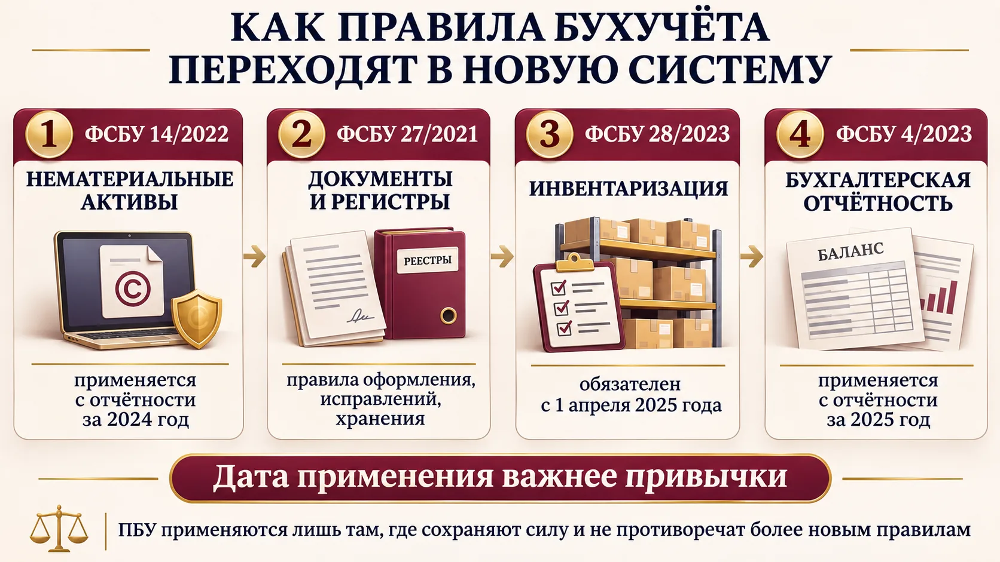
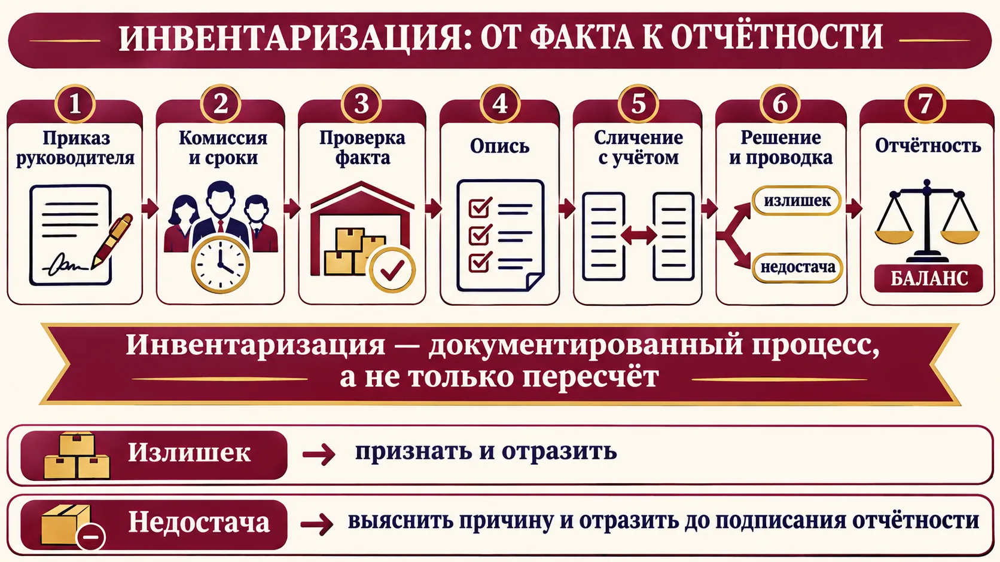
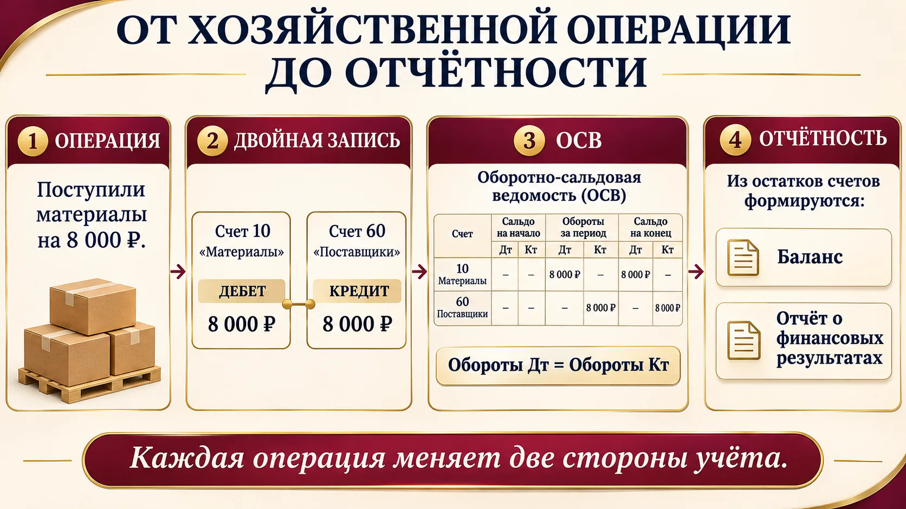
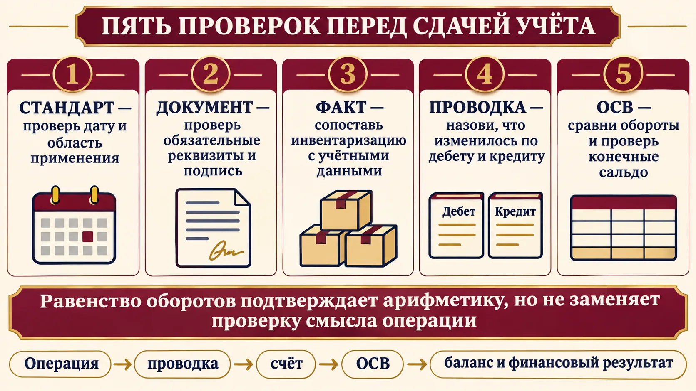

1. Нематериальный актив: право без материальной формы

Нематериальный актив (НМА) — идентифицируемый объект без материально-вещественной формы, который организация контролирует и от которого ожидает экономические выгоды. В занятии разбирались программы, сайты, домены, товарные знаки, патенты и лицензии. Применение ФСБУ 14/2022 началось с бухгалтерской отчётности за 2024 год.
Расходы на объект группируют по видам. До признания НМА затраты собираются как капитальные вложения; после готовности объекта он признаётся активом, а затем амортизируется. В примере преподавателя исключительное право на программу стоит 360 000 ₽, срок — 3 года: при линейном способе выходит 10 000 ₽ в месяц.
Срок, амортизация и обесценение
Для определённого срока в занятии названы линейный способ, уменьшаемый остаток и пропорционально объёму продукции. Срок и способ пересматривают ежегодно; изменения оценок применяются перспективно. НМА с неопределённым сроком не амортизируется, но проверяется на обесценение и пересмотр срока. Балансовую стоимость нельзя путать с возмещаемой стоимостью.
2. Первичный документ задаёт путь данным
ФСБУ 27/2021 регулирует документы и документооборот в бухучёте. Организация может разработать собственные формы: важны обязательные реквизиты, надлежащее подписание и понятное оформление исправлений. Электронный документ должен быть подписан электронной подписью, предусмотренной законодательством и правилами организации.
Первичный документ
Подтверждает факт хозяйственной жизни: что произошло, между кем, когда и на какую сумму.
Регистр
Систематизирует сведения из первички, связывает счета, инвентаризацию и отчётность.
График документооборота
Фиксирует, кто и к какому сроку создаёт, проверяет и передаёт документ.
Хранение
Срок хранения проверяют по виду документа и актуальным правилам архивного дела; универсальное «пять лет для всего» — опасное упрощение.
3. Инвентаризация — проверка факта и оформление результата

ФСБУ 28/2023 «Инвентаризация» обязателен с 1 апреля 2025 года. Инвентаризация подтверждает фактическое наличие и состояние объектов и сопоставляет их с учётными данными. Среди поводов: годовая отчётность, смена материально ответственного лица, выявление хищения, реорганизация или ликвидация и чрезвычайная ситуация. Организация может установить дополнительные случаи.
- Руководитель издаёт приказ, назначает комиссию и сроки.
- Комиссия проверяет фактическое наличие и оформляет описи.
- Фактические сведения сопоставляются с регистрами; расхождения фиксируются.
- Комиссия формулирует выводы, руководитель принимает решение.
- Результаты отражаются в учёте до составления и подписания отчётности.
В учебном разборе излишек принимается к учёту, недостача сначала выявляется и классифицируется, а её дальнейшее отражение зависит от причины и наличия виновного лица. Преподаватель приводит счета 94 и 73 как примеры корреспонденции в отдельных ситуациях; конкретные проводки и оценку нужно сверять с действующими правилами.
4. Даты стандартов важнее привычки
Преподаватель завершает обзор федеральных стандартов и напоминает: часть старых ПБУ заменена, а некоторые правила продолжают действовать в той мере, в какой они не противоречат новым нормам. Учётная политика должна отражать действующие требования, выбранные способы и процедуры компании.
| Стандарт | Предмет | Ключевая дата |
|---|---|---|
| ФСБУ 14/2022 | Нематериальные активы | Отчётность за 2024 год |
| ФСБУ 27/2021 | Документы и документооборот | Применяется с 2022 года |
| ФСБУ 28/2023 | Инвентаризация | С 1 апреля 2025 года |
| ФСБУ 4/2023 | Бухгалтерская отчётность | Отчётность за 2025 год |
Другие названные преподавателем риски: сохранять старые ПБУ по инерции, использовать устаревшие ответы из поиска, забывать резервы или раскрытия, формально проводить инвентаризацию и не пересматривать учётную политику. Для конкретной даты или требования проверяйте приказ и актуальную редакцию стандарта.
5. Итоговая работа: провести операцию до отчётности
Преподаватель описал комплексную проверочную задачу: из ситуаций вывести бухгалтерские записи, разнести суммы по счетам, составить ОСВ, а затем подготовить бухгалтерский баланс и отчёт о финансовых результатах. На экзамене операции будут даны без готовых номеров счетов: нужно выбрать счета и суммы самостоятельно.

- Назовите событие и какие объекты учёта изменились.
- Определите вид и сторону каждого счёта.
- Запишите проводку равными суммами по дебету и кредиту.
- Перенесите запись в счета и подсчитайте обороты и остатки.
- Проверьте ОСВ и перенесите остатки в формы отчётности.
6. Тренажёр проводок: меняйте операцию и сумму
Выберите операцию, задайте сумму вручную и проследите, какие счета изменяются. Это учебная модель: без НДС, налоговых нюансов и начальных остатков.
10 · Материалы
60 · Поставщики
Дт 10 — Кт 60 · 8 000 ₽
Материалы увеличились, одновременно вырос долг поставщику.
Контроль модели: сумма по дебету = сумма по кредиту =
Равные суммы — необходимое арифметическое условие двойной записи. Они не подтверждают, что счета и смысл операции выбраны правильно.
Как читать счёт
Например, материалы (10). Поступление увеличивает дебет; выбытие отражается по кредиту.
Например, задолженность поставщику (60) в этом примере. Увеличение долга — кредит, погашение — дебет.
По расчётам с разными лицами возможны дебетовые и кредитовые остатки: кто-то должен организации, а организация — кому-то.
Расшифровывает синтетический итог: по контрагенту, сотруднику, договору или номенклатуре.
Показать примеры из занятия
- Внесли наличные на расчётный счёт: Дт 51 — Кт 50.
- Получили материалы от поставщика: Дт 10 — Кт 60.
- Передали материалы в производство: Дт 20 — Кт 10.
- Начислили налог на доходы сотрудника: в примере занятия Дт 70 — Кт 68; конкретное начисление и удержание отражайте по фактической операции.
Эти записи иллюстрируют логику обсуждения; сверяйте корреспонденцию по рабочему плану счетов и условиям задачи.
7. ОСВ — арифметический контроль и мост к формам
Оборотно-сальдовая ведомость (ОСВ) сводит начальное сальдо, дебетовые и кредитовые обороты и остаток на конец периода по счетам. Итоги дебетовых и кредитовых оборотов должны равняться, поскольку каждая запись отражает одну сумму дважды.
| Счёт | Сальдо начальное | Оборот Дт | Оборот Кт | Сальдо конечное |
|---|---|---|---|---|
| 10 · Материалы | Дт 2 000 | Дт 8 000 | Кт 3 000 | Дт 7 000 |
| 60 · Поставщики | Кт 1 000 | Дт 2 000 | Кт 8 000 | Кт 7 000 |
Начальные сальдо: Дт = Кт · Обороты: Дт = Кт · Конечные сальдо: Дт = Кт
8. Чек-лист перед зачётом и закрытием периода
Прогресс хранится в браузере на этом устройстве.
9. Квиз с разбором ответов
10. Шпаргалка: пять контрольных вопросов

- Какой стандарт действует и с какой даты?
- Чем подтверждена операция и где её регистр?
- Что обнаружила инвентаризация?
- Что увеличилось и уменьшилось, какой счёт отражает каждую сторону?
- Сошлись ли обороты и подтверждены ли конечные остатки?